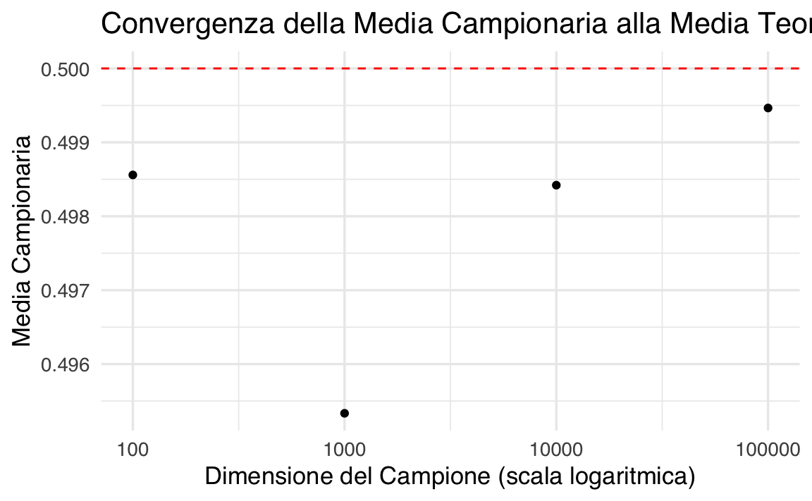
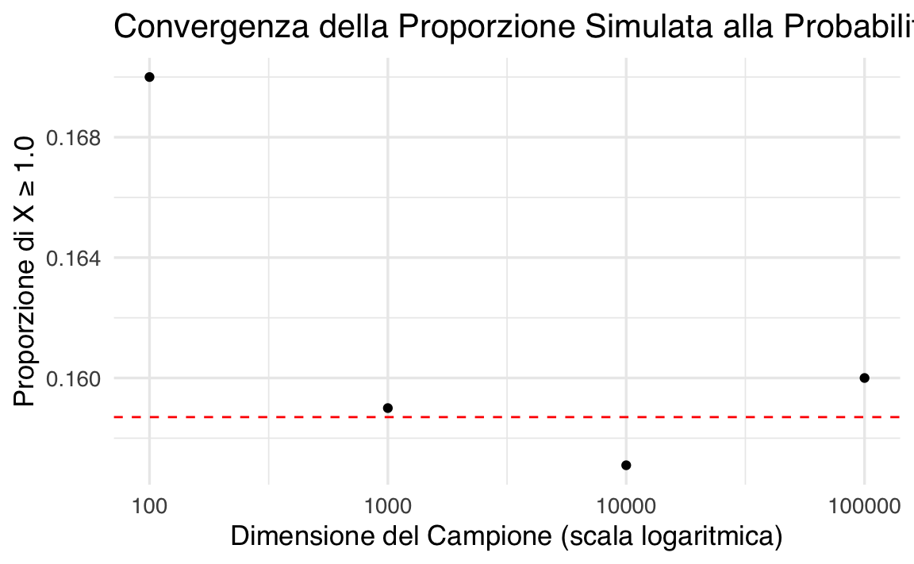
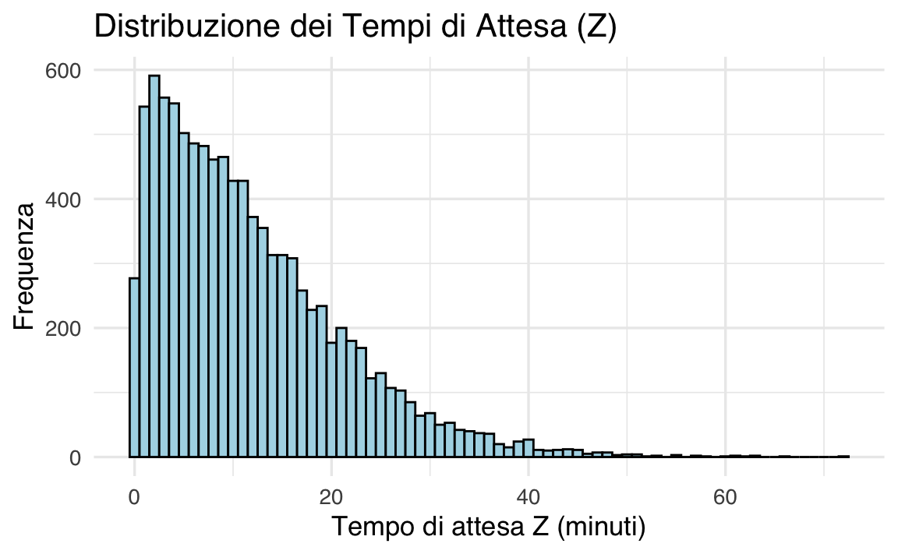
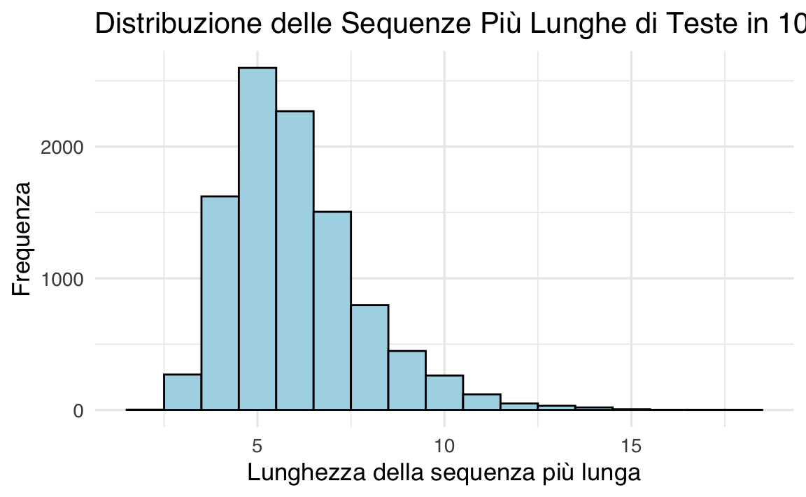
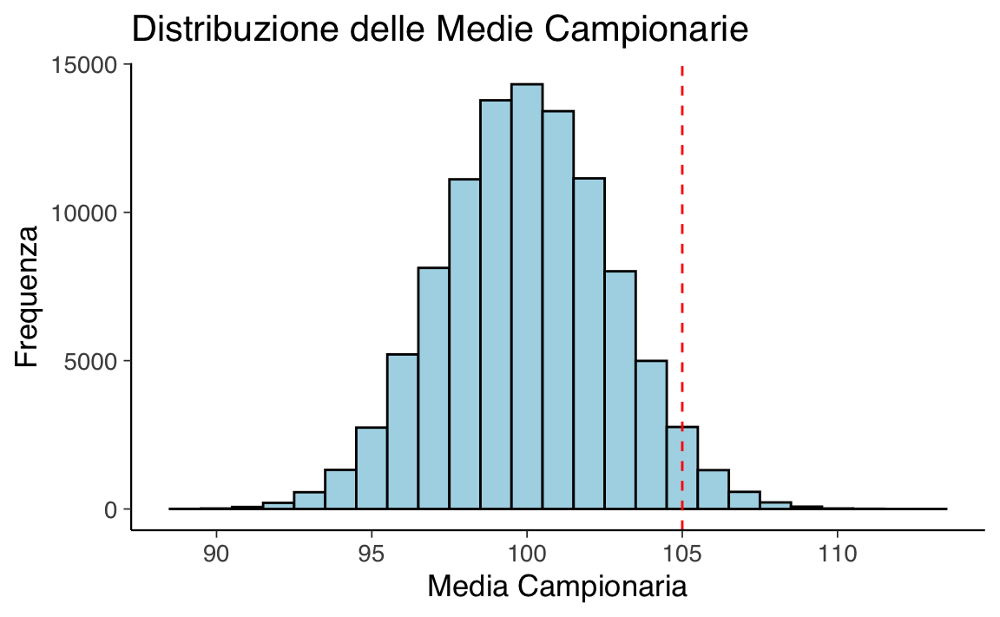
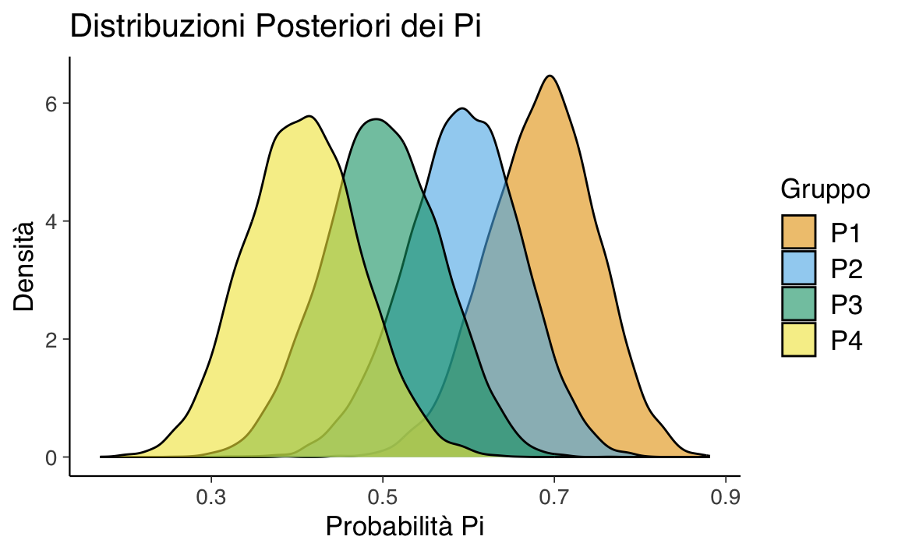
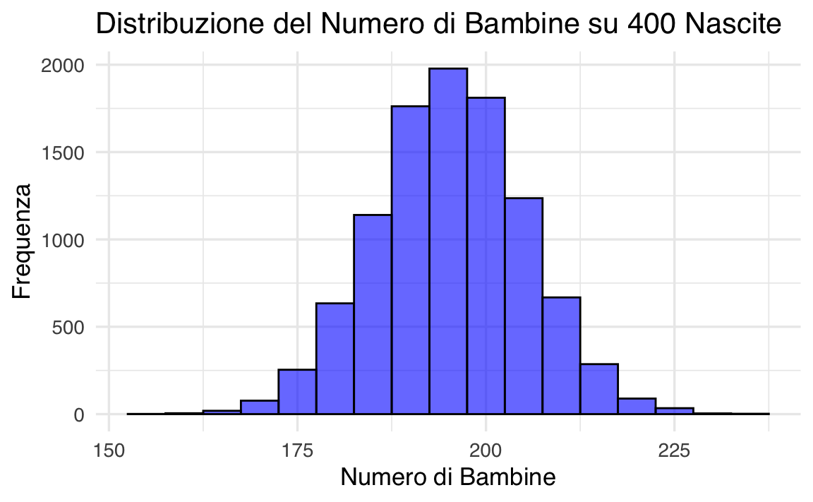
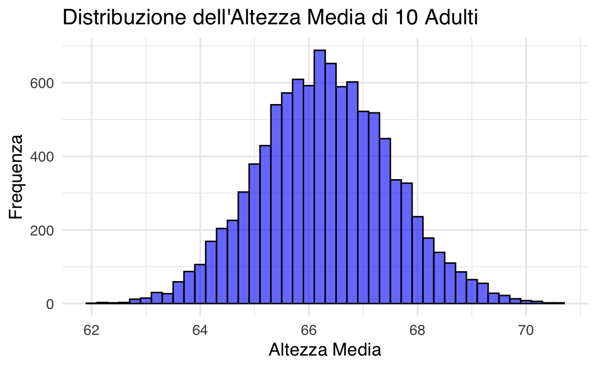

here::here("code", "_common.R") |>
source()
# Load packages
if (!requireNamespace("pacman")) install.packages("pacman")
pacman::p_load(tidyr)38 Simulazioni
Prerequisiti
- Leggere Regression and Other Stories. Focalizzati sul capitolo 5.
- Leggere il capitolo Simulation (Schervish & DeGroot, 2014).
Concetti e Competenze Chiave
Preparazione del Notebook
38.1 Introduzione
La simulazione permette di sfruttare la potenza di calcolo dei moderni computer per sostituire i calcoli analitici, talvolta complessi o impossibili da risolvere.
In questo capitolo, discuteremo alcuni esercizi di simulazione presentati da Schervish & DeGroot (2014) e da Gelman et al. (2021). Simulare variabili casuali è essenziale nelle statistiche applicate per diversi motivi:
Comprensione della variazione casuale: I modelli di probabilità imitano la variabilità del mondo reale. La simulazione aiuta a sviluppare intuizioni sulle oscillazioni casuali nel breve termine e sui loro effetti nel lungo termine.
Distribuzione campionaria: Simulare dati consente di approssimare la distribuzione campionaria, trasferendo questa approssimazione alle stime e alle procedure statistiche.
Previsioni probabilistiche: I modelli di regressione producono previsioni probabilistiche. La simulazione è il metodo più generale per rappresentare l’incertezza nelle previsioni.
38.2 Calcolare il valore medio di una distribuzione
Il teorema dei grandi numeri ci garantisce che, osservando un grande campione di variabili casuali i.i.d. (indipendenti e identicamente distribuite) con media finita, la media campionaria sarà vicina alla media della distribuzione. Utilizzando un computer per generare un ampio campione di questo tipo, possiamo calcolare la media delle variabili casuali al posto di affrontare calcoli analitici.
Per utilizzare la simulazione, occorre:
- Identificare il tipo di variabili casuali necessarie.
- Capire come farle generare al computer.
- Determinare il numero di osservazioni necessarie per avere fiducia nei risultati numerici.
Di seguito, vedremo un esempio pratico che verifica il concetto di simulazione confrontando i risultati numerici con quelli analitici.
38.3 Esempio 1: Calcolo della media di una distribuzione uniforme
La distribuzione uniforme sull’intervallo \([0, 1]\) ha una media teorica pari a \(0,5\). Se generiamo \(n\) variabili casuali i.i.d. uniformi su \([0, 1]\), il teorema dei grandi numeri afferma che la media campionaria:
\[ \overline{X} = \frac{1}{n} \sum_{i=1}^n X_i \]
sarà vicina alla media teorica \(0,5\), soprattutto per campioni di grandi dimensioni.
Vediamo come questo concetto si applica attraverso una simulazione in R.
# Impostiamo il numero di simulazioni
set.seed(123) # Per riproducibilità
sample_sizes <- c(100, 1000, 10000, 100000) # Dimensioni del campione
results <- data.frame(Sample_Size = sample_sizes, Sample_Mean = NA)
# Calcoliamo la media campionaria per ciascun campione
for (i in seq_along(sample_sizes)) {
n <- sample_sizes[i]
sample <- runif(n, min = 0, max = 1) # Generazione delle variabili uniformi
results$Sample_Mean[i] <- mean(sample) # Media campionaria
}
# Stampiamo i risultati
print(results)
#> Sample_Size Sample_Mean
#> 1 100 0.4986
#> 2 1000 0.4953
#> 3 10000 0.4984
#> 4 100000 0.4995# Visualizzazione grafica delle medie campionarie
ggplot(results, aes(x = Sample_Size, y = Sample_Mean)) +
geom_point() +
geom_hline(yintercept = 0.5, linetype = "dashed", color = "red") +
scale_x_log10() +
labs(
title = "Convergenza della Media Campionaria alla Media Teorica",
x = "Dimensione del Campione (scala logaritmica)",
y = "Media Campionaria"
) 
-
Generazione di variabili casuali: La funzione
runif(n, min = 0, max = 1)genera \(n\) variabili uniformemente distribuite sull’intervallo \([0, 1]\). -
Media campionaria: Per ogni dimensione del campione (\(n\)), calcoliamo la media con
mean(sample). - Risultati: Presentiamo i risultati in una tabella e li visualizziamo graficamente, mostrando la convergenza della media campionaria (\(\overline{X}\)) verso il valore teorico \(0,5\).
L’output mostrerà una tabella con le medie campionarie per diverse dimensioni del campione. Il grafico evidenzierà come la media campionaria si avvicini al valore teorico di \(0,5\) con l’aumentare della dimensione del campione.
38.4 Esempio 2: Probabilità di una Normale Standard
La probabilità che una variabile casuale standard normale sia almeno \(1.0\) è nota e pari a \(0.1587\). Per verificare questa probabilità usando una simulazione, possiamo generare un grande numero di variabili casuali i.i.d. (indipendenti e identicamente distribuite) standard normali, ad esempio \(X_1, \ldots, X_n\), e creare variabili casuali Bernoulli \(Y_1, \ldots, Y_n\) definite come segue:
\[ Y_i = \begin{cases} 1 & \text{se } X_i \geq 1.0 \\ 0 & \text{altrimenti.} \end{cases} \]
Il teorema dei grandi numeri afferma che la proporzione:
\[ \overline{Y} = \frac{1}{n} \sum_{i=1}^n Y_i \]
dovrebbe essere vicina alla media teorica di \(Y_i\), ossia \(\text{Pr}(X_i \geq 1.0) = 0.1587\). In questo esempio, simuleremo campioni di diverse dimensioni \(n\) per calcolare la proporzione di \(X_i \geq 1.0\) e confrontare i risultati con il valore teorico.
# Impostiamo il seme per la riproducibilità
set.seed(123)
# Dimensioni dei campioni da analizzare
sample_sizes <- c(100, 1000, 10000, 100000)
# Inizializziamo un data frame per salvare i risultati
results <- data.frame(
Sample_Size = sample_sizes,
Proportion = NA
)
# Calcolo delle proporzioni per ciascun campione
for (i in seq_along(sample_sizes)) {
n <- sample_sizes[i]
sample <- rnorm(n) # Generazione di variabili standard normali
Y <- ifelse(sample >= 1.0, 1, 0) # Variabili Bernoulli
results$Proportion[i] <- mean(Y) # Proporzione di Y_i = 1
}
# Stampiamo i risultati
print(results)
#> Sample_Size Proportion
#> 1 100 0.1700
#> 2 1000 0.1590
#> 3 10000 0.1571
#> 4 100000 0.1600# Grafico della proporzione rispetto alla dimensione del campione
ggplot(results, aes(x = Sample_Size, y = Proportion)) +
geom_point() +
geom_hline(yintercept = 0.1587, linetype = "dashed", color = "red") +
scale_x_log10() +
labs(
title = "Convergenza della Proporzione Simulata alla Probabilità Teorica",
x = "Dimensione del Campione (scala logaritmica)",
y = "Proporzione di X ≥ 1.0"
) 
-
Generazione di variabili normali standard: La funzione
rnorm(n)genera \(n\) variabili casuali dalla distribuzione normale standard. -
Creazione delle variabili Bernoulli: Tramite
ifelse(sample >= 1.0, 1, 0)trasformiamo le variabili normali standard in variabili Bernoulli. - Calcolo della proporzione: La proporzione di \(Y_i = 1\) è calcolata come la media delle variabili Bernoulli \(Y\).
- Confronto visivo: Il grafico mostra la convergenza della proporzione simulata al valore teorico (\(0.1587\)) con l’aumentare della dimensione del campione.
Il codice dimostra che, con l’aumentare della dimensione del campione \(n\), la proporzione simulata di \(X \geq 1.0\) converge verso la probabilità teorica \(0.1587\). Tuttavia, la variabilità delle simulazioni è evidente per campioni più piccoli, evidenziando l’importanza della dimensione campionaria nella stima accurata delle probabilità tramite simulazione.
38.5 Esempio 3: Attesa per il Cambiamento dell’Umore
Immaginiamo un esperimento psicologico in cui due partecipanti completano un compito che induce stress, al termine del quale misurano il loro livello di umore su una scala da 1 a 10. Entrambi devono raggiungere un punteggio di umore pari a 7 prima di fermarsi. Si vuole stimare, in media, quanto tempo uno dei due dovrà attendere affinché l’altro raggiunga il punteggio stabilito.
Supponiamo che il cambiamento dell’umore per ciascun partecipante sia modellato come una variabile casuale gamma con parametri \(k = 10\) (numero di tentativi per raggiungere il livello) e \(\lambda = 0.3\) (frequenza del cambiamento per minuto). Denotiamo il tempo necessario al partecipante A come \(X\) e al partecipante B come \(Y\). Vogliamo calcolare la media di \(Z = |X - Y|\), cioè la differenza assoluta nei tempi di completamento.
Anziché affrontare calcoli analitici complessi, utilizzeremo una simulazione per stimare questa media.
# Impostiamo il seme per la riproducibilità
set.seed(123)
# Parametri della distribuzione gamma
k <- 10 # Numero di eventi
lambda <- 0.3 # Frequenza degli eventi
# Numero di simulazioni
n_sim <- 10000
# Simuliamo i tempi di completamento per A e B
X <- rgamma(n_sim, shape = k, rate = lambda)
Y <- rgamma(n_sim, shape = k, rate = lambda)
# Calcoliamo la differenza assoluta
Z <- abs(X - Y)
# Media della differenza assoluta
mean_Z <- mean(Z)
# Stampa dei risultati
cat("Media della differenza assoluta nei tempi di completamento:", mean_Z, "minuti\n")
#> Media della differenza assoluta nei tempi di completamento: 11.76 minuti# Istogramma della distribuzione di Z
library(ggplot2)
ggplot(data.frame(Z), aes(x = Z)) +
geom_histogram(binwidth = 1, color = "black", fill = "lightblue") +
labs(
title = "Distribuzione dei Tempi di Attesa (Z)",
x = "Tempo di attesa Z (minuti)",
y = "Frequenza"
) 
-
Generazione dei tempi gamma: Usiamo la funzione
rgammaper generare \(n = 10,000\) tempi di completamento \(X\) e \(Y\), modellati come distribuzioni gamma con parametri \(k = 10\) e \(\lambda = 0.3\). - Calcolo della differenza assoluta: La differenza assoluta \(Z = |X - Y|\) rappresenta il tempo di attesa.
-
Stima della media: Utilizziamo la funzione
meanper calcolare la media di \(Z\). - Istogramma: Il grafico visualizza la distribuzione dei tempi di attesa \(Z\).
Supponendo i parametri specificati, il codice produrrà una stima della media del tempo di attesa e un istogramma che mostra la distribuzione di \(Z\).
Questo esperimento simulato fornisce una stima del tempo medio di attesa tra due partecipanti in un contesto di regolazione emotiva. La variabilità nei tempi di completamento evidenzia come i processi individuali (ad esempio, il recupero emotivo) possano differire, un aspetto rilevante per la progettazione di interventi psicologici.
38.6 Esempio 4: Lunghe Sequenze di Teste in un Lancio di Monete
Hai sentito qualcuno dire di aver ottenuto 12 teste consecutive lanciando una moneta apparentemente equa. La probabilità di ottenere 12 teste consecutive in 12 lanci indipendenti è \((0.5)^{12}\), un numero molto piccolo. Tuttavia, scopri che questa sequenza di 12 teste è apparsa in una serie di 100 lanci, rendendo l’evento meno sorprendente. La domanda è: quanto aumenta la probabilità di ottenere una sequenza di 12 teste consecutive se si effettuano 100 lanci?
Utilizzeremo una simulazione per stimare questa probabilità, modellando \(X = 1\) se nei 100 lanci appare una sequenza di almeno 12 teste consecutive, e \(X = 0\) altrimenti. Stimiamo la probabilità di una sequenza di 12 teste consecutive come la media delle osservazioni \(X\) in molte ripetizioni della simulazione.
# Impostiamo il seme per la riproducibilità
set.seed(123)
# Parametri della simulazione
n_sim <- 10000 # Numero di simulazioni
n_flips <- 100 # Numero di lanci per simulazione
sequence_length <- 12 # Lunghezza della sequenza cercata
# Funzione per verificare la presenza di una sequenza di almeno 'sequence_length' teste
check_run <- function(flips, sequence_length) {
# Trasformiamo i risultati in una stringa per contare sequenze consecutive
flip_string <- paste(rbinom(flips, 1, 0.5), collapse = "")
return(any(grepl(paste(rep(1, sequence_length), collapse = ""), flip_string)))
}
# Eseguiamo la simulazione
results <- replicate(n_sim, check_run(n_flips, sequence_length))
# Calcoliamo la probabilità stimata
estimated_probability <- mean(results)
# Stampiamo il risultato
cat("Probabilità stimata di ottenere una sequenza di almeno", sequence_length,
"teste consecutive in", n_flips, "lanci:", estimated_probability, "\n")
#> Probabilità stimata di ottenere una sequenza di almeno 12 teste consecutive in 100 lanci: 0.0106# Distribuzione delle lunghezze massime delle sequenze
longest_runs <- replicate(n_sim, {
flips <- rbinom(n_flips, 1, 0.5)
max(rle(flips)$lengths[which(rle(flips)$values == 1)])
})
# Grafico della distribuzione delle sequenze più lunghe
ggplot(data.frame(Longest_Run = longest_runs), aes(x = Longest_Run)) +
geom_histogram(binwidth = 1, color = "black", fill = "lightblue") +
labs(
title = "Distribuzione delle Sequenze Più Lunghe di Teste in 100 Lanci",
x = "Lunghezza della sequenza più lunga",
y = "Frequenza"
) 
-
Generazione dei lanci di moneta: Ogni lancio è modellato come una variabile binaria con \(\text{Pr(Testa)} = 0.5\), utilizzando
rbinom. -
Verifica della sequenza: La funzione
check_runcerca se una sequenza di lunghezza specificata appare nei lanci simulati. Questo è realizzato trasformando i risultati dei lanci in una stringa e utilizzando la funzionegreplper rilevare la sequenza. - Stima della probabilità: La proporzione di simulazioni in cui appare una sequenza di almeno 12 teste fornisce una stima della probabilità.
- Distribuzione delle sequenze più lunghe: Calcoliamo la lunghezza massima di una sequenza di teste per ogni simulazione e la visualizziamo con un istogramma.
L’output fornisce:
- La probabilità stimata di ottenere una sequenza di almeno 12 teste consecutive in 100 lanci.
- Un grafico che mostra la distribuzione delle sequenze più lunghe osservate nei 10,000 esperimenti.
Questo approccio può essere utilizzato per modellare eventi rari ma possibili in psicologia, come la comparsa di lunghe sequenze di comportamenti simili in compiti ripetuti (ad esempio, risposte corrette consecutive in un test di memoria). La simulazione offre una stima della probabilità di osservare tali eventi, fornendo informazioni utili per interpretare i risultati sperimentali.
38.7 Esempio: Probabilità della Media Campionaria
Consideriamo un campione casuale di 30 persone estratte dalla popolazione generale, in cui il QI segue una distribuzione normale \(\mathcal{N}(100, 15)\). Vogliamo calcolare la probabilità che la media campionaria sia maggiore di 105.
La probabilità teorica è data dalla distribuzione normale della media campionaria:
\[ \text{Media campionaria: } \mathcal{N}\left(\mu = 100, \, \sigma = \frac{15}{\sqrt{30}}\right) \]
La probabilità si calcola analiticamente come:
\[ P\left(\bar{X} > 105\right) = 1 - \Phi\left(\frac{105 - 100}{15 / \sqrt{30}}\right) \]
Calcoliamo questa probabilità teorica e stimiamola tramite simulazione.
# Calcolo analitico della probabilità
mu <- 100 # Media della popolazione
sigma <- 15 # Deviazione standard della popolazione
n <- 30 # Dimensione del campione
threshold <- 105 # Soglia per la media campionaria
# Probabilità teorica
prob_teorica <- 1 - pnorm(threshold, mean = mu, sd = sigma / sqrt(n))
cat("Probabilità teorica che la media campionaria sia maggiore di 105:", prob_teorica, "\n")
#> Probabilità teorica che la media campionaria sia maggiore di 105: 0.03394
# Simulazione
set.seed(123) # Per riproducibilità
n_sim <- 100000 # Numero di simulazioni
# Generazione dei campioni e calcolo delle medie campionarie
sample_means <- replicate(n_sim, mean(rnorm(n, mean = mu, sd = sigma)))
# Probabilità stimata tramite simulazione
prob_simulata <- mean(sample_means > threshold)
cat("Probabilità stimata tramite simulazione:", prob_simulata, "\n")
#> Probabilità stimata tramite simulazione: 0.0339# Istogramma delle medie campionarie
ggplot(data.frame(Sample_Means = sample_means), aes(x = Sample_Means)) +
geom_histogram(binwidth = 1, color = "black", fill = "lightblue") +
geom_vline(xintercept = threshold, linetype = "dashed", color = "red") +
labs(
title = "Distribuzione delle Medie Campionarie",
x = "Media Campionaria",
y = "Frequenza"
) 
- La funzione
pnormcalcola la probabilità cumulativa della normale. Sottraendo tale valore da 1, otteniamo la probabilità di superare la soglia specificata. - La funzione
rnormgenera \(n\) valori casuali da una distribuzione normale \(\mathcal{N}(100, 15)\). Ripetiamo il processo 100,000 volte conreplicate, calcolando la media campionaria ogni volta. - La proporzione di medie campionarie che superano 105 fornisce la stima simulata della probabilità.
La simulazione offre un metodo pratico per stimare probabilità anche in situazioni più complesse, dove il calcolo analitico potrebbe non essere semplice.
38.8 Esempio 5: Simulazione in un Trial Clinico
In questo esempio, vogliamo analizzare i risultati di un trial clinico con quattro gruppi di trattamento (\(i = 1, 2, 3, 4\)), stimando la probabilità di successo (\(P_i\)) di ciascun trattamento. Il successo è definito come la probabilità che un paziente non abbia una ricaduta dopo il trattamento.
L’analisi si basa su una distribuzione a posteriori di \(P_i\), calcolata combinando:
- La verosimiglianza (likelihood): Derivata dai dati osservati \(x_i\) (successi) e \(n_i\) (pazienti totali per gruppo).
- La distribuzione a priori: Una distribuzione Beta(\(\alpha_0, \beta_0\)) scelta per rappresentare le nostre convinzioni iniziali su \(P_i\).
38.8.1 Derivazione della Distribuzione a Posteriori
Likelihood (Verosimiglianza):
La probabilità di osservare \(x_i\) successi in \(n_i\) prove (pazienti) segue una distribuzione binomiale: \[ x_i \sim \text{Binomiale}(n_i, P_i) \] La funzione di verosimiglianza per \(P_i\) è quindi: \[ \mathcal{L}(P_i \mid x_i, n_i) \propto P_i^{x_i} (1 - P_i)^{n_i - x_i} \]Distribuzione a priori:
Assumiamo che \(P_i\) segua una distribuzione Beta(\(\alpha_0, \beta_0\)), con densità: \[ \pi(P_i) \propto P_i^{\alpha_0 - 1} (1 - P_i)^{\beta_0 - 1} \]Distribuzione a posteriori:
Combinando la verosimiglianza e la distribuzione a priori, otteniamo la distribuzione a posteriori (tramite il Teorema di Bayes): \[ \pi(P_i \mid x_i, n_i) \propto \mathcal{L}(P_i \mid x_i, n_i) \cdot \pi(P_i) \] Sostituendo le espressioni della likelihood e della prior: \[ \pi(P_i \mid x_i, n_i) \propto P_i^{x_i + \alpha_0 - 1} (1 - P_i)^{n_i - x_i + \beta_0 - 1} \] Questa è la densità di una distribuzione Beta con parametri aggiornati: \[ P_i \sim \text{Beta}(\alpha_0 + x_i, \beta_0 + n_i - x_i) \]
38.8.2 Simulazione con R
Il nostro obiettivo è stimare:
- \(\Pr(P_i > P_4)\), dove \(P_4\) rappresenta il placebo.
- La probabilità che un trattamento sia il più efficace (\(P_i = \max(P_1, P_2, P_3, P_4)\)).
- La probabilità che tutti i \(P_i\) siano vicini entro un intervallo \(\epsilon\).
# Parametri della distribuzione a priori
alpha0 <- 2 # Parametro a priori per i successi
beta0 <- 2 # Parametro a priori per i fallimenti
# Dati osservati
n <- c(50, 50, 50, 50) # Numero totale di pazienti per ciascun gruppo
x <- c(35, 30, 25, 20) # Numero di pazienti che non hanno avuto una ricaduta
# Parametri posteriori
posterior_alpha <- alpha0 + x
posterior_beta <- beta0 + n - x
# Numero di simulazioni
n_sim <- 10000
# Simulazione delle distribuzioni posteriori
set.seed(123) # Per riproducibilità
P <- sapply(1:4, function(i) rbeta(n_sim, posterior_alpha[i], posterior_beta[i]))
# 1. Probabilità che ciascun trattamento sia migliore del placebo
probs_better_than_placebo <- colMeans(P[, 1:3] > P[, 4])
names(probs_better_than_placebo) <- paste0("P", 1:3, " > P4")
# print(probs_better_than_placebo)
# 2. Probabilità che un trattamento sia il migliore
probs_best <- colMeans(apply(P, 1, function(row) row == max(row)))
names(probs_best) <- paste0("P", 1:4, " è il migliore")
# print(probs_best)
# 3. Probabilità che tutti i Pi siano entro epsilon
epsilon <- 0.1
probs_within_epsilon <- mean(apply(P, 1, function(row) max(row) - min(row) <= epsilon))
cat("Probabilità che tutti i Pi siano entro epsilon =", epsilon, ":", probs_within_epsilon, "\n")
#> Probabilità che tutti i Pi siano entro epsilon = 0.1 : 0.0047
# Visualizzazione: Distribuzioni posteriori
P_df <- data.frame(
Simulazione = rep(1:n_sim, 4),
P = as.vector(P),
Gruppo = factor(rep(1:4, each = n_sim), labels = paste0("P", 1:4))
)
ggplot(P_df, aes(x = P, fill = Gruppo)) +
geom_density(alpha = 0.6) +
labs(
title = "Distribuzioni Posteriori dei Pi",
x = "Probabilità Pi",
y = "Densità"
) 
38.8.3 Risultati e Interpretazione
- Probabilità \(\Pr(P_i > P_4)\): Indicano quanto è probabile che ogni trattamento superi il placebo.
- Probabilità che un trattamento sia il migliore: Mostrano quale trattamento è più efficace in termini probabilistici.
- Probabilità di vicinanza (\(\epsilon\)): Forniscono informazioni sulla similarità tra le probabilità di successo dei trattamenti.
Questo approccio combina inferenza bayesiana e simulazione per rispondere a domande chiave in un trial clinico.
38.9 Esempio 6: Quante bambine su 400 nascite?
Supponiamo che la probabilità di nascita di una bambina sia \(p\) = 0.488. Se in un ospedale nascono 400 bambini in un anno, quante saranno bambine? Possiamo simulare questo processo usando una distribuzione binomiale, ripetendo la simulazione 10,000 volte.
# Numero di simulazioni
n_sims <- 10000
# Probabilità di nascita di una bambina
p_girl <- 0.488
# Simulazione del numero di bambine
set.seed(123)
n_girls <- rbinom(n_sims, size = 400, prob = p_girl)
# Visualizzazione dell'istogramma
ggplot(data.frame(n_girls), aes(x = n_girls)) +
geom_histogram(binwidth = 5, fill = "blue", color = "black", alpha = 0.6) +
labs(
title = "Distribuzione del Numero di Bambine su 400 Nascite",
x = "Numero di Bambine",
y = "Frequenza"
)
38.10 Simulazione di probabilità continue
Gelman et al. (2021) dimostrano come sia possibile incorporare anche distribuzioni di probabilità continue nei tipi di simulazioni discusse nella sezione precedente. Forniscono il seguente esempio di un modello misto discreto/continuo: il 52% degli adulti negli Stati Uniti sono donne e il 48% sono uomini. L’altezza degli uomini segue approssimativamente una distribuzione normale con una media di 69.1 pollici e una deviazione standard di 2.9 pollici; per le donne, la media è 63.7 pollici e la deviazione standard è 2.7 pollici. Ecco il codice per generare l’altezza di un adulto scelto casualmente:
Supponiamo di selezionare 10 adulti a caso. Cosa possiamo dire della loro altezza media?
set.seed(123)
n_sims <- 10000
avg_heights <- replicate(n_sims, simulate_height(10))
# Visualizzazione dell'istogramma
ggplot(data.frame(avg_heights), aes(x = avg_heights)) +
geom_histogram(binwidth = 0.2, fill = "blue", color = "black", alpha = 0.6) +
labs(
title = "Distribuzione dell'Altezza Media di 10 Adulti",
x = "Altezza Media",
y = "Frequenza"
)
38.11 Sommario di una simulazione con media e mediana
Quando le nostre distribuzioni sono costruite come simulazioni al computer, può essere conveniente riassumerle in qualche modo. Tipicamente, riassumiamo la posizione di una distribuzione con la sua media o mediana.
La variazione nella distribuzione è tipicamente riassunta dalla deviazione standard, ma spesso preferiamo usare la deviazione mediana assoluta. Se la mediana di un insieme di simulazioni \(z_1, \ldots, z_n\) è \(M\), allora la deviazione mediana assoluta è:
\[ \text{mad} = \text{mediana}_{n} |z_i - M| \]
Tuttavia, poiché siamo abituati a lavorare con le deviazioni standard, quando calcoliamo la deviazione mediana assoluta, la riscaliamo moltiplicandola per 1.483, il che riproduce la deviazione standard nel caso speciale della distribuzione normale:
\[ 1.483 * \text{median}(|y - \text{median}(z)|) \]
Preferiamo tipicamente i riassunti basati sulla mediana perché sono più stabili computazionalmente, e riscaliamo il riassunto basato sulla mediana della variazione come descritto sopra in modo da essere comparabile alla deviazione standard, che sappiamo già interpretare nella pratica statistica usuale.
Ecco come implementare quanto sopra in R per i dati relativi all’altezza media di 10 adulti.
# Calcolo della media e mediana
mean_avg_height <- mean(avg_heights)
median_avg_height <- median(avg_heights)
# Calcolo della deviazione standard
sd_avg_height <- sd(avg_heights)
# Calcolo della MAD (Deviazione Mediana Assoluta)
mad_avg_height <- median(abs(avg_heights - median_avg_height)) * 1.483
# Risultati
cat("Mean:", mean_avg_height, "\n")
#> Mean: 66.3
cat("Median:", median_avg_height, "\n")
#> Median: 66.28
cat("Standard Deviation:", sd_avg_height, "\n")
#> Standard Deviation: 1.226
cat("MAD (scaled):", mad_avg_height, "\n")
#> MAD (scaled): 1.23538.11.1 Intervalli di Incertezza
Per rappresentare l’incertezza, possiamo calcolare intervalli centrali al 50% e al 95%.
# Intervalli di incertezza
lower_50 <- quantile(avg_heights, 0.25)
upper_50 <- quantile(avg_heights, 0.75)
lower_95 <- quantile(avg_heights, 0.025)
upper_95 <- quantile(avg_heights, 0.975)
cat("50% Interval:", lower_50, "-", upper_50, "\n")
#> 50% Interval: 65.46 - 67.13
cat("95% Interval:", lower_95, "-", upper_95, "\n")
#> 95% Interval: 63.91 - 68.77Ecco come interpretarli.
Intervallo centrale al 50%.
- Contiene i valori centrali che coprono il 50% della distribuzione. Questo intervallo si estende dal primo quartile (25° percentile) al terzo quartile (75° percentile).
- Indica la fascia di valori in cui si trovano i risultati “più comuni” o tipici. È una misura di variabilità concentrata nella parte centrale della distribuzione, meno sensibile a valori estremi.
- Per le altezze medie simulate di 10 adulti, un intervallo centrale al 50% che va da 65 a 67 pollici indica che metà delle medie osservate si trova in questo intervallo.
Intervallo centrale al 95%.
- Contiene il 95% della distribuzione simulata, lasciando solo il 2.5% dei valori al di sotto e il 2.5% al di sopra dell’intervallo. Questo intervallo si calcola tra il 2.5° percentile e il 97.5° percentile.
- Indica una fascia più ampia che cattura quasi tutti i valori plausibili, inclusi quelli meno probabili ma comunque possibili.
- Per le altezze medie simulate, un intervallo al 95% che va da 64 a 68 pollici significa che, in quasi tutte le simulazioni, l’altezza media si trova in questo intervallo, con poche eccezioni.
38.12 Commenti e Considerazioni Finali
Lo scopo della simulazione di dati fittizi non è fornire intuizioni sui dati o sul problema reale in esame, ma piuttosto valutare le proprietà dei metodi statistici utilizzati, partendo da un modello generativo ipotizzato. Le simulazioni sono cruciali nella pratica della ricerca. Molti autori suggeriscono che dovrebbero essere eseguite prima di raccogliere i dati di uno studio, per valutare, tra le altre cose, se la dimensione campionaria prevista fornisce un potere statistico sufficiente per rispondere alla domanda della ricerca (Gelman & Brown, 2024).
38.13 Esercizi
Esercizio 38.1 Immagina il caso di 220 studenti che devono sostenere tre prove in itinere in un corso. Il voto finale è la media dei voti ottenuti in queste tre prove. Le distribuzioni dei voti per le prove sono descritte come segue:
- Prima prova: I voti sono distribuiti secondo una gaussiana con media 24. Il 15% degli studenti ottiene un voto inferiore a 18.
- Seconda prova: I voti sono distribuiti secondo una gaussiana con media 25. Il 10% degli studenti ottiene un voto inferiore a 18.
- Terza prova: I voti sono distribuiti secondo una gaussiana con media 26. Solo il 5% degli studenti ottiene un voto inferiore a 18.
Dei 220 studenti iniziali:
- Il 10% non partecipa alla prima prova.
- Un ulteriore 5% non partecipa alla seconda prova.
Per ottenere il voto finale, uno studente deve partecipare a tutte e tre le prove.
Utilizzando una simulazione, trova la media finale dei voti e calcola l’intervallo di incertezza al 90% per la stima della media.
Informazioni sull’Ambiente di Sviluppo
sessionInfo()
#> R version 4.4.2 (2024-10-31)
#> Platform: aarch64-apple-darwin20
#> Running under: macOS Sequoia 15.3
#>
#> Matrix products: default
#> BLAS: /Library/Frameworks/R.framework/Versions/4.4-arm64/Resources/lib/libRblas.0.dylib
#> LAPACK: /Library/Frameworks/R.framework/Versions/4.4-arm64/Resources/lib/libRlapack.dylib; LAPACK version 3.12.0
#>
#> locale:
#> [1] C/UTF-8/C/C/C/C
#>
#> time zone: Europe/Rome
#> tzcode source: internal
#>
#> attached base packages:
#> [1] stats graphics grDevices utils datasets methods base
#>
#> other attached packages:
#> [1] thematic_0.1.6 MetBrewer_0.2.0 ggokabeito_0.1.0 see_0.9.0
#> [5] gridExtra_2.3 patchwork_1.3.0 bayesplot_1.11.1 psych_2.4.12
#> [9] scales_1.3.0 markdown_1.13 knitr_1.49 lubridate_1.9.4
#> [13] forcats_1.0.0 stringr_1.5.1 dplyr_1.1.4 purrr_1.0.2
#> [17] readr_2.1.5 tidyr_1.3.1 tibble_3.2.1 ggplot2_3.5.1
#> [21] tidyverse_2.0.0 rio_1.2.3 here_1.0.1
#>
#> loaded via a namespace (and not attached):
#> [1] generics_0.1.3 stringi_1.8.4 lattice_0.22-6 hms_1.1.3
#> [5] digest_0.6.37 magrittr_2.0.3 evaluate_1.0.3 grid_4.4.2
#> [9] timechange_0.3.0 fastmap_1.2.0 rprojroot_2.0.4 jsonlite_1.8.9
#> [13] mnormt_2.1.1 cli_3.6.3 rlang_1.1.5 munsell_0.5.1
#> [17] withr_3.0.2 yaml_2.3.10 tools_4.4.2 parallel_4.4.2
#> [21] tzdb_0.4.0 colorspace_2.1-1 pacman_0.5.1 vctrs_0.6.5
#> [25] R6_2.5.1 lifecycle_1.0.4 htmlwidgets_1.6.4 pkgconfig_2.0.3
#> [29] pillar_1.10.1 gtable_0.3.6 glue_1.8.0 xfun_0.50
#> [33] tidyselect_1.2.1 rstudioapi_0.17.1 farver_2.1.2 htmltools_0.5.8.1
#> [37] nlme_3.1-167 labeling_0.4.3 rmarkdown_2.29 compiler_4.4.2Bibliografia
Gelman, A., & Brown, N. J. (2024). How statistical challenges and misreadings of the literature combine to produce unreplicable science: An example from psychology.
Gelman, A., Hill, J., & Vehtari, A. (2021). Regression and other stories. Cambridge University Press.
Schervish, M. J., & DeGroot, M. H. (2014). Probability and statistics (Vol. 563). Pearson Education London, UK: